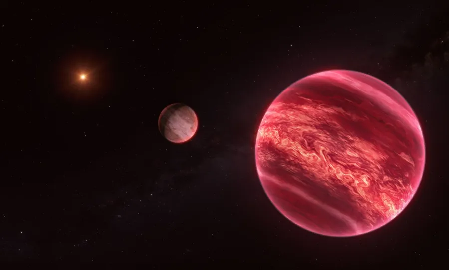

22. Juli 2026
CD-35 2722: Hinweise auf einen „Exomond“ um einen Braunen Zwerg
Beobachtungen mit dem Very Large Telescope der ESO liefern Hinweise auf ein mondähnliches Objekt im System CD-35 2722. Es umkreist keinen Planeten, sondern einen Braunen Zwerg mit etwa 37 Jupitermassen, der seinerseits einen Stern mit rund halber Sonnenmasse umrundet.
Das Objekt ist mindestens so massereich wie Jupiter und wurde mit der Radialgeschwindigkeitsmethode gefunden: Es lässt den Braunen Zwerg leicht hin- und herschwanken. Das Team spricht von einem „Exosatelliten“. Sollte sich der Fund bestätigen, wäre es der erste außerhalb des Sonnensystems entdeckte „Mond“ – bisher gibt es nur wenige Kandidaten.
Quellen: ESO: "New 'exomoon' detection challenges cosmic labels.", 22.07.2026; ESO: "Artist's impression of CD-35 2722, a system with a moon-like object.", 22.07.2026